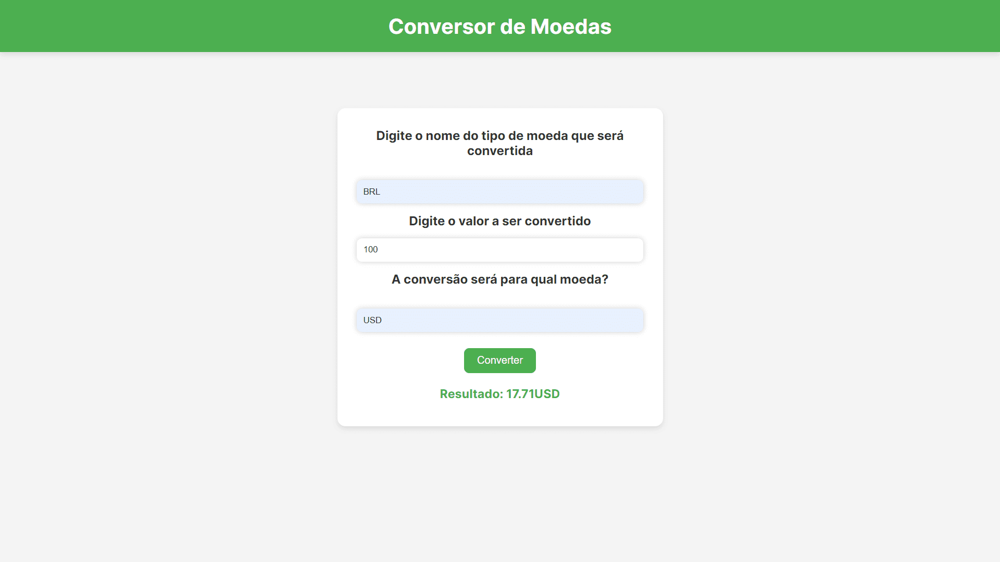
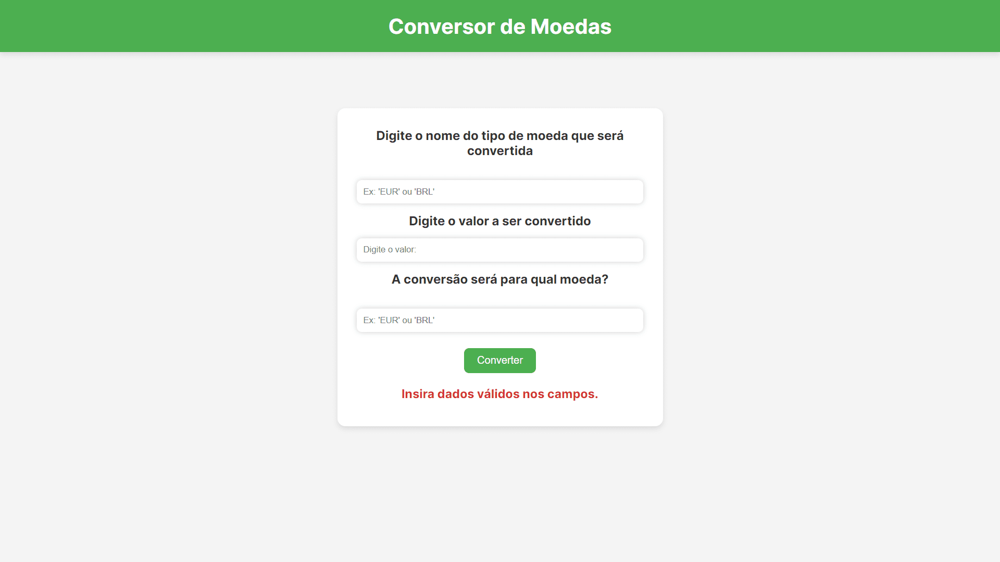
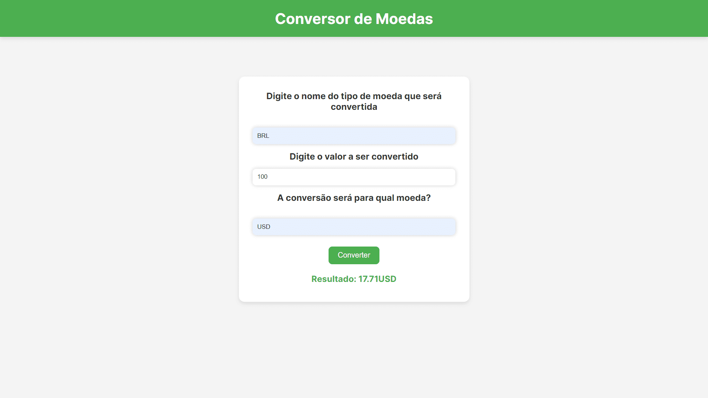
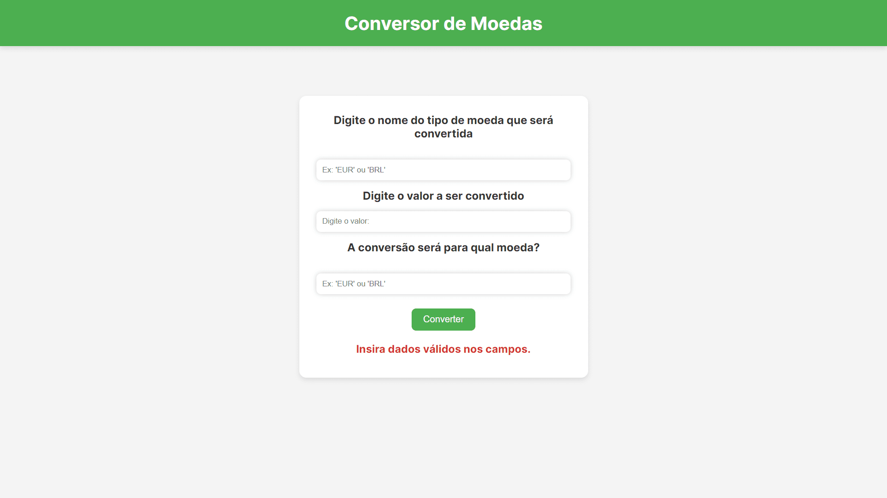

Fabiano Júnior Lima Barbosa
TÓPICOS
Sobre Mim
Olá! Meu nome é Fabiano Júnior Lima Barbosa. Sou um jovem programador brasileiro, sempre disposto a aprender mais.
Sempre gostei da área de tecnologia. Desde os meus 12 anos, estava em contato com a programação através dos meus projetos com Arduino.
Atuo na área há 3 anos. Estou cursando o 3° ano do curso de Informática Integrada ao Ensino Médio no Instituto Federal do Norte de Minas Gerais, Campus Almenara.
Eu uso Arch Linux :]
Minhas Habilidades
Habilidades em Design de Interfaces Web, Design Responsivo, UI/UX Design (Design de Interface e Experiência do Usuário) e Design de Navegação.
Possuo experiência com o uso do Firebase (Storage, Realtime Database e Autenticação).
Possuo experiência com diversas tecnologias amplamente utilizadas.
Competências
BioWave
O site é um projeto realizado pela minha turma do meu curso técnico para a SNCT (Semana Nacional de Ciências e Tecnologia), onde tive grande atuação no design e produção da interface e mecanismos, com foco nas abas do Mapa Interativo, Blog e Página inicial, com participação significativa no design e programação da interface do ChatBot e Quiz.
Acesse o site aqui: BioWave
Artes de Gleiciane Lima
Este site é um portifólio pessoal feito por mim para a artista local Gleiciane Lima, com um sistema de postagens com interface gráfica e integração com o Firebase para armazenamento de dados.
Acesse o site aqui: Artes de Gleiciane Lima
Conversor de Moedas
Este site foi um pequeno projeto de estudo pessoal em lógica de programação e implementação de APIs.
Nele o usuário insere a moeda que será convertida, o valor de conversão e a moeda para qual será convertida.
O câmbio em tempo real de cada moeda tem como fonte os dados da API Open Exchange Rates, implementada ao site.
Acesse o site aqui: Conversor de Moedas
 

Estação das Letras
Este site não é um projeto de estudo de funcionamento do Session Storage em um exemplo prático.
O site é uma simples livraria virtual, carinhosamente apelidada de 'Estação das Letras', onde o usuário pode adicionar um item ao carrinho, excluir e trocar o tema de cores entre claro e escuro.
Em nossa aplicação, o Session Storage é utilizado para salvar os itens do carrinho e o ultimo tema aplicado. Os mesmos dados são perdidos ao fechar a aba ou o navegador, como parte do resultado esperado ao utilizar o Session Storage como forma de persistir os dados.
Acesse o site aqui: Estação das Letras